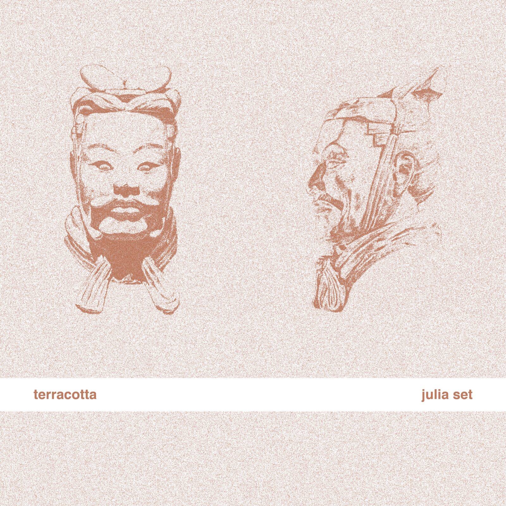
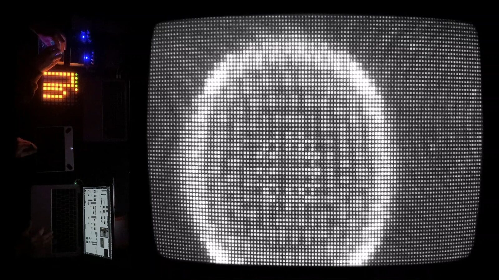
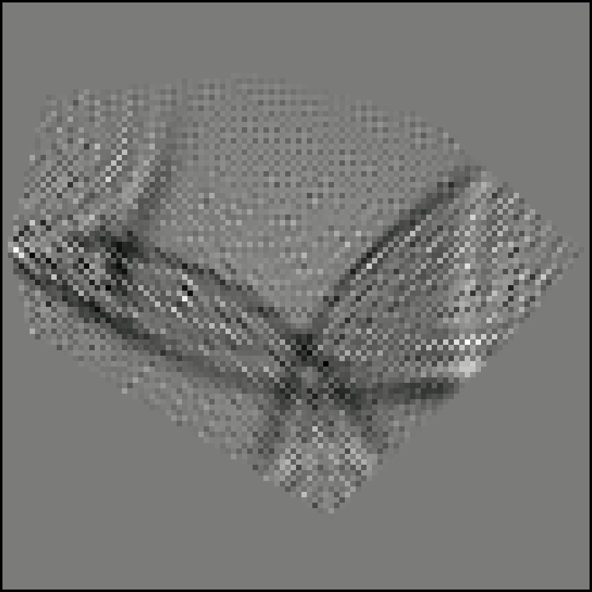
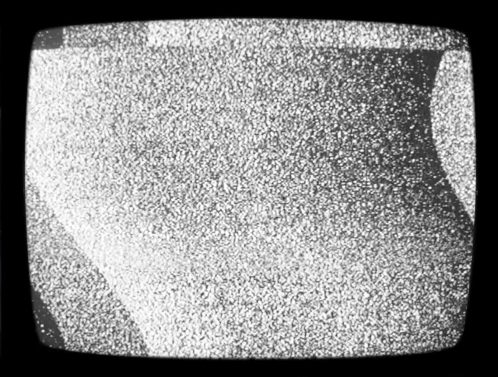
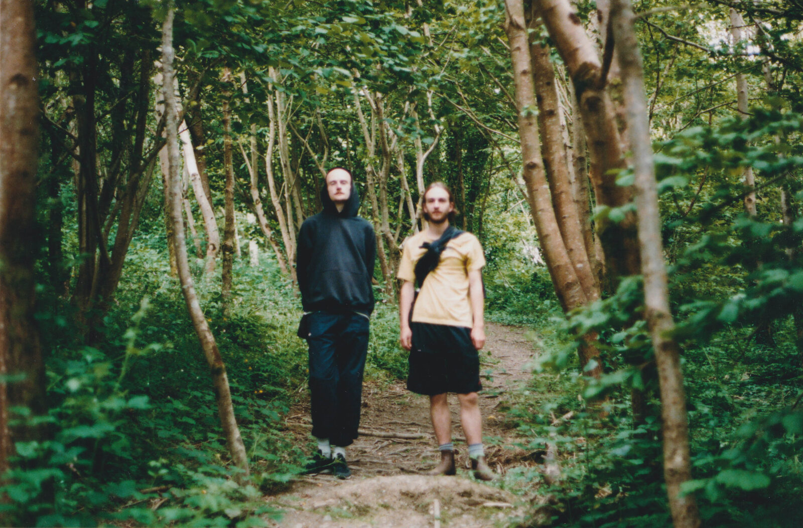

terracotta
Project Description
terracotta is an audiovisual work specifically composed to explore the sounds of arbitrarily shaped drums. Arbitrarily shaped drums are a family of instruments that do not exist in the real world, and are instead formulated according to a mathematical specification for ideal polygonal instruments in two-dimensional space. The sounds of these instruments were simulated using physical modelling synthesis, which was used to produce a linear approximation to their varied timbral spectrums. These instruments were explored thoroughly throughout this composition, which involved experimenting with their combinatorial potential and their distinct timbral differences from the sounds of more traditional percussive instruments. During the compositional process, each of the individual drums were randomly generated, and then tuned sympathetically with one another so as to produce a timbrally cohesive soundworld. Accompanying the drums, there was also the use of a Wacom drawing tablet, which has here been turned into a inharmonic synthesiser, so as to compliment the sounds of the arbitrarily shaped drums. This tablet synthesiser works by using the horizontal axis of the tablet to determine a fundamental frequency, whilst the vertical axis is used to control the amplitude of the sound’s various harmonic partials. To create inharmonic timbres, the individual partials were evenly spaced across the frequency spectrum according to an arbitrary value, resulting in an overall timbre that is a distorted replica of the more traditional harmonic series. In accordance with these themes, the percussive instruments were also represented, distorted and abstracted visually, as part of the performative stimulus for this work. These visuals incorporate the physically modelled simulations of the arbitrarily shaped drums, as well as reacting to the temporal changes in amplitude and style throughout the performance.
Type of submission
“New NIME” - traditional NIME music sessions aimed at showcasing pieces performed or composed with new interfaces for musical expression.
Programme Notes
terracotta is an audiovisual work by the performance duo Julia Set. Combining their musical expertise with their situated knowledge of music computing and the visual arts, Julia Set seek to explore performance art practice in a sensually immersive and atmospheric manner.
terracotta’s primary focus is to audibly explore the inharmonic sounds of percussive instruments, most notably the sounds of arbitrarily shaped drums. Percussion instruments, including arbitrarily shaped drums, present an interesting possibility for the timbral concerns of a work, being that the harmonic content of such a family of instruments is not accurately represented by the formal structure of Western musical theory and its situated practices. Such a departure from the confines of harmonic thought allows for the new expression of timbral colours that are aesthetically aligned with one another, producing the ability to write and compose music in a distinct musical language. The work itself is formed in relation to the gradual emergence of sonic activity, opening with a soft display of improvised inharmonic content, which progresses towards a full dynamic exploitation of an ensemble of arbitrarily shaped drums. In accordance with this stylistic progression, the visuals sympathetically evolve alongside the gradual emergence of inharmonic sonic activity.
Media
 ▶
▶terracotta by Julia Set


Album cover for terracotta by Julia Set.


A screenshot from the performance of terracotta.


A still image of a physically modelled, arbitrarily shaped drum.


A still image of the visual element of this performance.


Julia Set
Ethics Statement
Perhaps the most crucial concern of electronic music composition and performance is the consumption of energy with respect to the ongoing global energy crisis and the effects that this has on global warming. For this performance, no device was included that was not artistically necessary, with the inclusion of two laptops being an imperative for the simultaneous performative control of both the audio and the visual elements of this work. Physical modelling synthesis, as it currently stands, is also a computationally intensive endeavour to pursue, however careful consideration of its inherent computational complexities was undertaken when simulating the sounds of the various arbitrarily shaped drums included in this performance.
The stimulus for this work is largely in connection with one of the author’s PhD research into the musical affordances of arbitrarily shaped drums, which is funded by the Centre for Doctoral Training in Artificial Intelligence and Music at Queen Mary University of London. However, no part of this research necessitated the composition of this work, and although it is here being used as an exemplification of one of the author’s research into arbitrarily shaped drums, its compositional form, overall sonic content and performative execution was in no way influenced by, or conformed towards, any institutional specification, aims or agendas. Instead, this composition is an unbiased, standalone expression of artistic creativity, incorporating only the musical materials of one of the author’s PhD research as a stimulus.
Acknowledgements
This work is in part supported by the Centre for Doctoral Training in Artificial Intelligence and Music at Queen Mary University of London, funded by UK Research and Innovation (UKRI) under EPSRC grant EP/S022694/1.